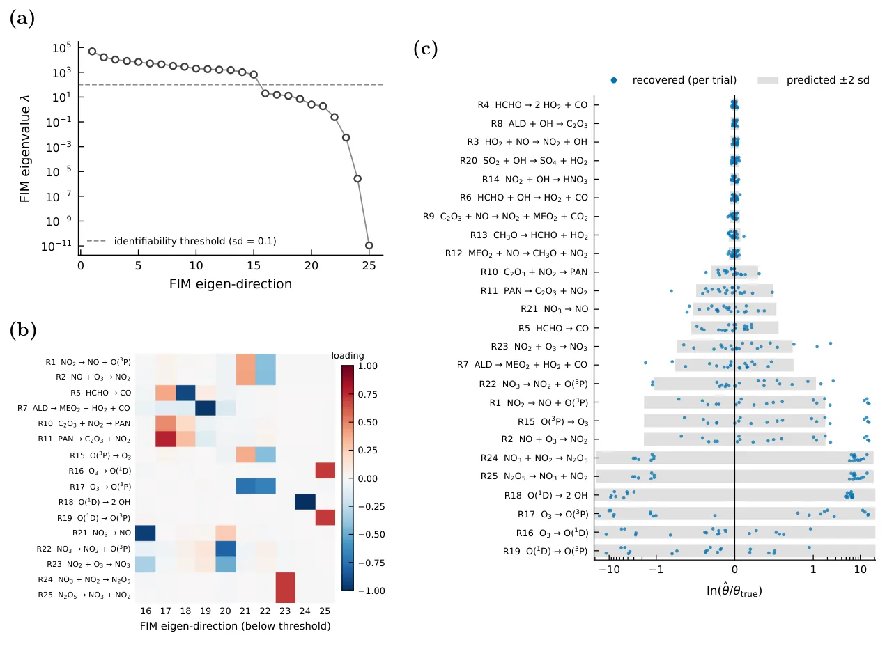
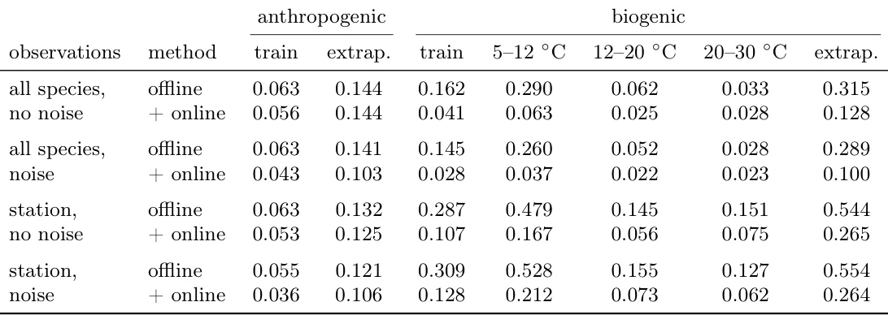

O Problema da Barreira Computacional
A modelagem da química atmosférica é essencial para entender saúde pública, clima e formação de aerossóis. Os mecanismos químicos completos, como o Master Chemical Mechanism (MCM), envolvem milhares de espécies e mais de dez mil reações. Codificar manualmente o sistema de equações diferenciais ordinárias (EDOs) rígidas e suas jacobianas para essas reações é tedioso e propenso a erros. Para automatizar isso, a comunidade utiliza o Kinetic PreProcessor (KPP), que gera código eficiente em Fortran ou C.
No entanto, o KPP gera código estático que não se integra aos frameworks modernos de programação diferenciável, como JAX, PyTorch ou TensorFlow. Esses frameworks são a base do aprendizado de máquina contemporâneo, onde o cálculo de gradientes é automático e vetorizado. A desconexão entre o KPP (hardware CPU, código estático) e o ML (hardware GPU/TPU, código dinâmico) impede a aplicação direta de técnicas avançadas de estimativa de parâmetros e aprendizado híbrido.
Ferramentas como pykpp e MUSICA tentam resolver parte desse problema, mas ainda dependem de solucionadores externos ou não oferecem diferenciação automática completa para adjuntos. O KPPax, desenvolvido por pesquisadores da Universidade de Helsinki, LUT University e do Atmospheric Modelling Centre Lahti, propõe preencher essa lacuna. Ele transforma mecanismos KPP em código JAX diferenciável, compilado sob demanda (JIT) e vetorizável, permitindo que a química atmosférica seja tratada como parte de um grafo computável de gradientes.
A Arquitetura do KPPax
O KPPax não reescreve o solver numérico do zero. Em vez disso, ele atua como um pré-processador que traduz a sintaxe do KPP para operações JAX. O núcleo da solução reside na avaliação das leis de taxa reacional em espaço logarítmico e no uso de operações esparsas. Ao trabalhar no logaritmo das concentrações, o modelo mantém a diferenciabilidade mesmo quando as concentrações variam em várias ordens de grandeza, um problema comum em química estocástica.
A integração temporal do sistema rígido é feita através da biblioteca diffrax. O KPPax explora os adjuntos de modo direto e reverso dessa biblioteca para obter sensitividades exatas. Isso elimina a necessidade de derivar código adjunto manualmente, um processo complexo e sujeito a erros humanos. O gerador de código do KPPax preserva a esparsidade da jacobiana original, mas a resolve usando fatoração densa nos estágios implícitos. Para mecanismos pequenos, isso é eficiente; para grandes, a esparsidade simbólica do KPP original pode ser superior, mas a flexibilidade do JAX compensa em muitos cenários de ML.
Os parâmetros do modelo, especificamente os coeficientes de taxa (k), são parametrizados como k = k_ref ⊙ exp(θ), onde k_ref são valores de referência e θ são fatores de correção logarítmicos. Essa parametrização garante que os coeficientes permaneçam positivos e facilita a otimização, pois θ pode variar livremente no espaço real. A observação é empilhada como logaritmos das concentrações simuladas, alinhando a escala dos resíduos com a escala dos parâmetros.

Identificabilidade Antes do Treinamento
Um dos maiores trunfos do KPPax é a capacidade de realizar análise de identificabilidade local antes de qualquer ajuste de modelo. Utilizando a Matriz de Informação de Fisher (FIM), calculada a partir da jacobiana automaticamente diferenciada, os autores podem prever quais coeficientes de taxa podem ser estimados com precisão a partir de um conjunto específico de observações. A FIM fornece o limite de Cramér-Rao, que define a menor variância possível para um estimador não viciado.
No experimento com o mecanismo POLLU (25 coeficientes de taxa, 20 espécies), a análise da FIM revelou que apenas nove coeficientes individuais eram identificáveis (desvio padrão < 10%). As outras dez direções no espaço de parâmetros tinham autovalores próximos de zero, indicando que os dados não podiam distinguir combinações específicas de reações rápidas. Por exemplo, no ciclo NO-NO2-O3, as reações são tão rápidas em relação ao tempo experimental que apenas as razões entre suas taxas são constrangidas, não seus valores absolutos.
Essa análise é computacionalmente barata: calcular a jacobiana e a FIM leva menos de um segundo. Isso permite o desenho experimental: antes de rodar um experimento real ou simulado, os cientistas podem usar o KPPax para verificar se o desenho atual (espécies observadas, tempos) é capaz de identificar os parâmetros de interesse. Se não, o experimento pode ser redesenhado para maximizar a informação obtida.
Validação Numérica e Estimativa de Parâmetros
Para validar as previsões da FIM, os autores realizaram 20 ensaios de estimação com ruído sintético. Usando o algoritmo Levenberg-Marquardt, minimizaram o erro quadrático médio (χ²) para estimar os 25 coeficientes. Para os nove parâmetros identificáveis, o desvio raiz quadrático médio (RMS) das estimativas em relação à verdade concordou com o limite de Cramér-Rao dentro de 30%. Isso confirma que a jacobiana automática do KPPax fornece sensitividades precisas e que a análise prévia é confiável.
Para os parâmetros não identificáveis, as estimativas divergiram significativamente da verdade, às vezes por mais de seis ordens de grandeza. No entanto, o modelo ainda ajustou bem os dados observados, pois as reações dentro de um cluster rápido mantêm suas proporções constantes. Isso ilustra um ponto crucial: um modelo pode prever bem as observações sem conhecer os parâmetros individuais corretos, desde que as combinações relevantes estejam corretas. O KPPax torna essa distinção explícita e quantificável.
Híbrido Física-ML: Correção de Inventários de Emissão
Além da estimativa de parâmetros, o KPPax permite a integração de redes neurais diretamente no loop de simulação química. Os autores demonstraram isso corrigindo um inventário de emissões biogênicas. Uma rede neural foi treinada offline para prever correções logarítmicas nas emissões baseada em covariáveis ambientais. Em seguida, essa correção foi aplicada online durante a simulação química via KPPax, usando um ajuste Gauss-Newton para refinar as estimativas.
A abordagem híbrida combina o melhor dos dois mundos: a rede neural captura padrões complexos e não lineares nos dados, enquanto o modelo químico impõe as restrições físicas de conservação de massa e cinética reacional. O ajuste online permite que a rede neural seja refinada considerando o impacto direto das emissões corrigidas na química atmosférica, algo que o treinamento offline puro ignora.
Os resultados mostraram uma redução de erro de 2,4 a 5 vezes na correção das emissões biogênicas em comparação com o treinamento apenas offline. Além disso, o modelo híbrido recuperou informações sobre emissões em baixas temperaturas que eram perdidas nas retrievals individuais. Isso demonstra que a diferenciação automática através do solver químico permite o fine-tuning (ajuste fino) de componentes de ML acoplados a equações diferenciais rígidas.

Modos de Diferenciação e Eficiência
O KPPax herda a flexibilidade de modos de diferenciação da diffrax. Para problemas com poucos parâmetros em relação às observações (como a estimativa de 25 coeficientes), o modo direto (forward-mode) é mais eficiente, calculando a jacobiana completa com uma integração tangente por parâmetro. Para treinamento de redes neurais com muitos parâmetros e uma única perda escalar, o modo reverso (reverse-mode) com checkpointing recursivo é preferível. O KPPax permite alternar entre esses modos sem reescrever o código químico.
O custo computacional do KPPax inclui uma sobrecarga inicial de compilação JIT (just-in-time), que é amortecida ao longo de múltiplas execuções, como em otimizações iterativas ou simulações em lote (vmap). Para mecanismos pequenos como o POLLU, a fatoração densa da jacobiana é rápida. No entanto, para mecanismos grandes com milhares de espécies, a complexidade cúbica da fatoração densa pode se tornar um gargalo. A esparsidade simbólica do KPP original (LU esparsa) ainda é superior em escala absoluta para esses casos extremos.
Limitações e Direções Futuras
O experimento de emissões é idealizado: usa o mesmo mecanismo químico para a verdade e o modelo, sem transporte atmosférico e com condições iniciais conhecidas perfeitamente. Na prática, erros de transporte e incertezas nas condições iniciais complicam a separação entre erros de emissão e erros de transporte. Além disso, a análise de identificabilidade é local; métodos globais como cadeias de Markov (MCMC) ou perfis de verossimilhança seriam necessários para quantificar a incerteza completa em vales curvos da função de custo.
Uma extensão crítica para o KPPax é a implementação de solucionadores lineares esparsos ou livres de matriz para os estágios implícitos. Isso reduziria o custo computacional para mecanismos atmosféricos de grande escala, como o MCM, tornando a ferramenta viável para aplicações industriais e de pesquisa em larga escala. A comparação sistemática de precisão e custo com o KPP em Fortran para mecanismos grandes está em andamento.
Conclusão
O KPPax representa um passo significativo na convergência entre a química atmosférica tradicional e o aprendizado de máquina moderno. Ao tornar os mecanismos KPP diferenciáveis e vetorizáveis no JAX, ele habilita novas abordagens para estimativa de parâmetros, análise de incerteza e modelos híbridos física-ML. A capacidade de prever identificabilidade antes do ajuste e de refinar redes neurais online através do solver químico abre novas possibilidades para a interpretação de dados atmosféricos e a melhoria de modelos climáticos.
Embora não substitua o KPP em Fortran para simulações de alta performance em larga escala sem ML, o KPPax preenche uma lacuna crítica para pesquisadores que desejam integrar conhecimento físico com modelos de dados. Ele transforma a química atmosférica de uma caixa preta estática em um componente ativo e diferenciável do pipeline de aprendizado de máquina.
O que fica
- O KPPax traduz mecanismos químicos KPP para JAX, permitindo cálculo exato de gradientes via diffrax sem derivadas manuais.
- A análise de identificabilidade via Matriz de Informação de Fisher prevê quais parâmetros podem ser aprendidos antes do treinamento, validada com 30% de precisão no erro RMS.
- Modelos híbridos que ajustam redes neurais online via solver químico reduzem o erro de correção de emissões em até 5x comparado ao treinamento offline.
- A formulação logarítmica garante diferenciabilidade, mas exige clipping de concentrações, afetando gradientes em espécies consumidas totalmente.
Paper original: KPPax: preprocess differentiable kinetic ODE for machine learning in atmospheric chemistry
Comentários
Nenhum comentário ainda. Seja o primeiro.